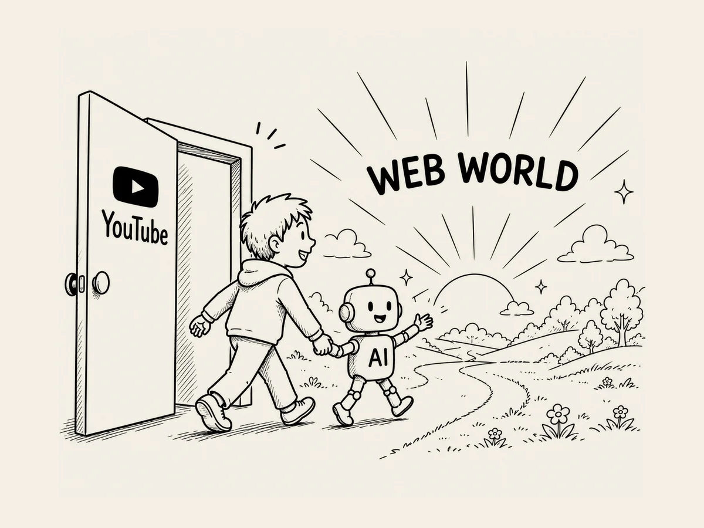

5.
Moment mal. Was wäre, wenn ich daraus eine Website mache?
Ich hatte schon einmal YouTube ausprobiert.
Damals hatte ich mit Hilfe der KI
ein bisschen gelernt,
wie man Videos und Sounds erstellt.
Als wir jetzt über Websites sprachen,
musste ich plötzlich daran denken,
was ich damals gemacht hatte.
Moment mal.
Könnte ich das,
was ich auf YouTube gemacht hatte,
nicht auch auf einer Website machen?
Aber das Web war nicht YouTube.
Zuerst musste ich Sounds erstellen und verfeinern,
die Menschen beim Einschlafen gerne hören.
Wenn der ursprüngliche Sound fertig war,
musste ich ihn so aneinanderfügen,
dass die Übergänge nicht auffielen.
Klingt einfach.
War es aber nicht.
Das war ziemlich feine Arbeit.
Ich suchte bei Google.
Ich schaute bei Google Trends nach.
Ich verbrachte ziemlich viel Zeit
mit Marktforschung.
Ähnliche Websites gab es zwar,
aber die Konkurrenz schien nicht besonders groß zu sein.
Gut.
Dann bauen wir eine Website
mit Black-Screen-Noise.
Eine Website,
die man beim Schlafen laufen lassen kann.
Und weil der Bildschirm sowieso schwarz sein würde,
dachte ich,
vielleicht wäre sie etwas einfacher zu bauen.
Dann kam der entscheidende Punkt.
Da meldete sich mein innerer Weltverbesserer.
Ich wollte schon immer
etwas machen,
das anderen Menschen hilft.
Menschen dabei helfen,
besser zu schlafen.
Perfekt.
Zum Schluss fragte ich die KI noch:
„Könnte diese Website
beliebt werden?“
Die KI sagte,
sie hätte Potenzial.
Damals wusste ich noch nicht,
dass die KI dazu neigt,
eher positiv zu antworten.
